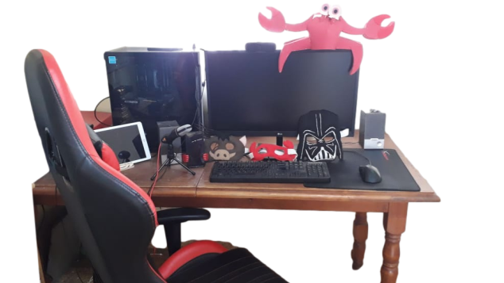
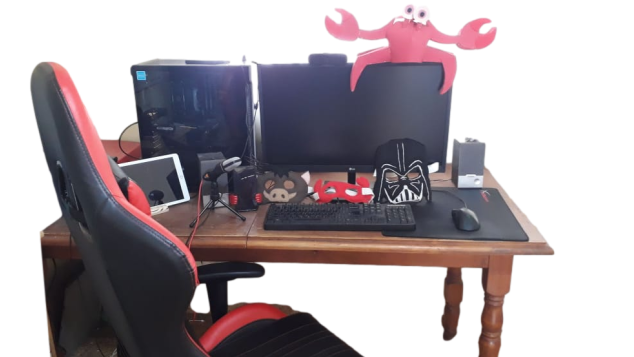

Bienvenido al
Bienvenido al  

ROBA DURO, ROBA PRIMERO, SIN PIEDAD
El Darkside es un clan con gente de distintas nacionalidades donde prima el compañerismo, el respeto y la amabilidad. Nos une la pasión por el juego y amamos aplicar nuestras técnicas oscuras. Jugamos siempre “al limite” para derrotar a nuestros oponentes, pero fuera del juego mostramos siempre el respeto que el rival se merece. El clan fue fundado en Julio de 2020 por Biry , luego de pasar efímeramente por algunas comunidades del Age of Empires. En principio, la filosofía Darkside atrajo revuelo y polémicas, ya que muchos la consideraban tramposa y desleal. Dada esta situación, el mismo Biry decidió empezar a stremear para hacer oír su voz. Nuestras técnicas son prácticas que forman parte del juego y por lo cual nosotros las consideramos totalmente válidas. Así nació el Darkside, el “Lado Oscuro” del Age. Por último, dejamos en claro (por si hacia falta) que condenamos el uso de cheats y estamos totalmente en contra de cualquier tipo de trampas.
Acerca de Biry
 Ranked Versus
Ranked Versus
| Puesto | Nombre | Nacionalidad | Rated |
|---|
Ranked TG
| Puesto | Nombre | Nacionalidad | Rated |
|---|